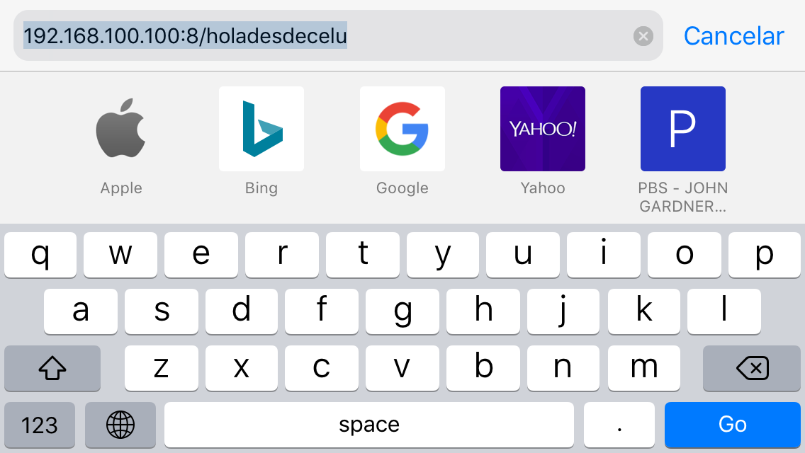

SMI
Sistema de Monitoreo Inalambrico
Overview
This section will record the experiments regardin the esp8266 module. This module, has the ability to connect to the wi-fi. As such, the esp8266 is a great alternative to use in this system.
The existing solution
Currently there is no existing solution to the system. As the Fab system contains the end data transition in a screen in the hardware, and the output to the SD card. The objective of this next step is to tweet when the system finds an unexpected or potentially dangerous data reading.
Development
The development has been to follow the ESP8266Arduinotutorial–WiFimodule, to better understand the system.

This is the Pins the module uses. Important: VCC= 3.3v, 5v might burn the chip.
* AT – response OK
* AT+CWLAP – list nearby available WiFi networks
* AT+GMR – check the firmware version
* AT+CWJAP=”<access_point_name>”,”<password>” – join WiFi network using credentials
* AT+CIFSR – get current allocated IP address
Datasheet: esp8266ex_chipDatasheet
AT Instructions: esp8266_atinstructions
Module datasheet: esp8266_01_moduleDatasheet
After some time ill spent on the tutorial I have decide to go a different route, as I cannot replicate the communication between Arduino and THE ESP8266.
I used the tutorial wifi_modulo_esp8266_conectarse, en español. It was a proponent of the idea that the Arduino Uno could be used, under the condition to remove the atmega 328p chip removed and adding a external power battery in order for the Arduino to have enough power through the 3.3v connection. It also requires the "ch pd" PIN to be in high. * follow on what that means form the datasheets * I am also not clear what that means when attempting to connect it to an Arduino with microcontroller, or maybe it is just the setup?
In this case, open Arduino IDE, connect the correct port and open under TOOS>serial monitor. Set the to: both NL & CR, and 115200(in this case). Write:
AT
* establish communication, response: ok
AT+CIOBAUD=9600
* it is preferable to work on 9600 baud, After command switch to 9600 baud
AT+GMR
* asks the current version
AT+CWMODE?
* What mode esp is working on.
* Mode 1= station, Mode 2= access point, Mode 3= station & access point
AT+CWMODE=3
* Change to station and access point
AT+CWLAP
* Look for current networks

AT+CWJAP="JHC","1122334455"
* With this we select the network to connect to and its password
AT+CIPMUX=1
* Testing if the connection is correct.
AT+CIPSERVER=1,80
* Setting up the channel and the port to talk to the device.
AT+CIFSR
* Aquire the communication ip.
Response:
09:35:10.635 -> +CIFSR:APIP,"192.168.4.1"
09:35:10.686 -> +CIFSR:APMAC,"62:01:94:33:60:8f"
09:35:10.721 -> +CIFSR:STAIP,"192.168.100.100"
09:35:10.756 -> +CIFSR:STAMAC,"60:01:94:33:60:8f"
SELECT CIFSR:STAIP + CIPSERVER RESULT + / MESSAGE 192.168.100.100:8/HOLAMUNDO
Transmision through web browser:
Transmision from a remote location, my iphone.

The reciver end:
Cheek point: Esp & Arduino
The tutorial ends here. With this we not only proved that the esp is working but that it is relatively simple to interact with wi-fi, including sing in info and messages.
It should be noted the esp is capable enough to be used independently, bypassing the Arduino completely and is what we did in the previous tutorial. It would be a shame to use Arduino board without its main microcontroller, so the next goal should be to communicate the esp directly, or to integrate both boards.
Posting a tweet
in the next project, I'm going to tweet with the ESP8266. The simplest way possible, though the Arduino shield with out the Atmel microcontroller. There are several tutorials, and with it different options:
* posting_tweet1 = Using IFTTT and NodeMCU
* posting_tweet2 = Using www.thinkspeak.com
* posting_tweet3 = Using Blynk Library
1. Post Tweet with ESP8266
In order to tweet in this case we will use IFTTT "if this then that". An open service platform that lest you control many apps and products through the internet.
Using the IFTTT platform, you would send a request to the IFTTT platform, and it triggers a recipe that sends you an email alert as an example.
Start by accessing the ifttt page. The tutorial has already made an applet to tweet. It is found as postAtweetWithTheESP8266.
1. Complete the applet, "left the post_tweet" in the even name
2. Edited the text sent from the esp8266, by adding my tweeter @IdJogrecorrea, and the documentation taking place
3. Save the changes.
4. Select settings at ifttt, and copy my secret key as follows:
* URL: https://maker.ifttt.com/use/frrj4uKCEUvYFZRaFRbwXCt4lTs6XqfwcAXQ6pvtVTR
https://maker.ifttt.com/trigger/post_tweet/with/key/frrj4uKCEUvYFZRaFRbwXCt4lTs6XqfwcAXQ6pvtVTR
https://maker.ifttt.com/use/frrj4uKCEUvYFZRaFRbwXCt4lTs6XqfwcAXQ6pvtVTR
frrj4uKCEUvYFZRaFRbwXCt4lTs6XqfwcAXQ6pvtVTR
https://maker.ifttt.com/trigger/post_tweet/with/key/frrj4uKCEUvYFZRaFRbwXCt4lTs6XqfwcAXQ6pvtVTR
5. Enter the earlier http adress to action the applet through web. I did manage to get the browser to send the tweeter and got as expected:
Congratulations! You've fired the post_tweet event
But I did not find a tweet. It is unfortunate, and have no idea where it went wrong. I will hence proceed to another method of tweeting.
Another Alternative to make the esp8266 work with tweeter
Conclusions
In this case I have opted to finally switch to esp 32, as the esp 8266 shield was out of my reach and hacking it with local components could not obtain enough stability (most lightly) in order to establish a communication that did not require an unassembled Arduino.
Other interesting references for safe keeping
- Three tutorials for ESP8266 and ESP32 arduinojson.org
- ESP8266 - Beginner Tutorial + Project - An ultimate tutorial for beginners on how to connect and use an ESP8266 via Arduino and program it to blink an LED using the Blynk app.
- esp88266_lastminengineers- Mostly getting time date, simple weather station, display multiple values on web server, etc.
- ESP8266_arduino_core- Exceptional library on everything between Arduino and esp8266, but its sort of advanced.
- Estacion_meteorologica video de YouTube
-- Others
Safe-keeping the following address in order to always have access.
https://jorgehcorrea.github.io/documentation
-